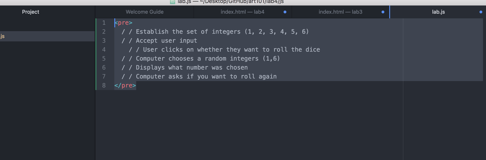

Lab 4 - Pseudocoding and Problem-solving
Challenges
I did not have a partner for this Lab, and it definitely caused for a more challenging time. By not collaborating with anyone, I could only reference the lectures, the instructions given, and the w3 website. If I had a partner I would most likely have a less challenging time with this lab.
Problems
A problem I had with this Lab was when I got to the part where I had to pseudocode a computer task. I did not entirely know how to start with this task. I chose the dice sitatuion because I did not want anything too complex. I was not sure how to articulate the steps for the dice roll. I eventually went with my gut, and decided to follow the logical steps. After getting down the steps, I decided to throw in some programming jargon. Furthermore, I had some trouble with the tags and how to use them (pre and code). But this was addressed in my discussion section, so that helped me out a lot. 
Results
Making Shin Ramyun
- Gather a pot
- Add 2.5 cups of water
- Bring water to boil
- Open Shin Ramyun package
- Locate seasoning and dried vegetables package
- Add the contents of the two packages, to the pot, as the water starts to boil
- Add the noodles, to the pot, after the seasoning and dried vegetables are added
- Cook contents of the pot for 5 minutes
- Stir occasionally
- After cooking the noodles, remove from the pot
- Enjoy the noodles!
Have A Dice Roll
/ / Establish the set of integers (1, 2, 3, 4, 5, 6)
/ / Accept user input
/ / User clicks on whether they want to roll the dice
/ / Computer chooses a random integers (1,6)
/ / Displays what number was chosen
/ / Computer asks if you want to roll again